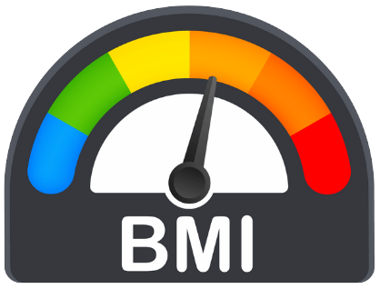
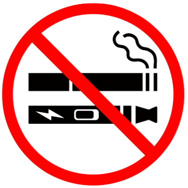

WAT IS DIABETES?
Diabetes is een chronische aandoening waarbij je bloedsuikergehalte te hoog is. 1 op de 10 volwassen Belgen heeft diabetes.
Diabetes verhoogt je risico op een hartinfarct, trombose, nier- en oogproblemen, zeker als de aandoening pas laattijdig ontdekt wordt. Als je er vroeg bij bent en goed behandelt kun je deze verwikkelingen voorkomen.
Type 2 diabetes is de meestvoorkomende vorm (90%) en treedt vooral op vanaf 40 jaar. Aan erfelijke aanleg en leeftijd kun je niks veranderen, andere risicofactoren als overgewicht, roken, te weinig bewegen en ongezonde voeding kun je wel aanpakken. Type 1 diabetes (10%), start meestal op jonge leeftijd en kun je niet voorkomen.
TEST JOUW RISICO OP TYPE 2 DIABETES
Met deze test bereken je je eigen risico op type 2 diabetes. Beantwoord alle 8 vragen hieronder om je risicoscore te bepalen.
Jouw Risicoscore
-- p.
Deze score geeft een indicatie van je risico op type 2 diabetes.
Wat betekent jouw score?
0 - 6 PUNTEN: Laag Risico
Je hebt momenteel een laag risico. Blijf gezond eten, voldoende bewegen (30 min/dag) en houd een gezond gewicht (BMI < 25). Herhaal deze test elke 3 jaar.
7 - 11 PUNTEN: Licht Verhoogd Risico
Je hebt een licht verhoogd risico. Focus op gezonde voeding, dagelijkse beweging (30 min), vermijd lang stilzitten. Als je BMI ≥ 25 is, probeer dan 5% af te vallen. Herhaal deze test elke 3 jaar.
≥ 12 PUNTEN: Sterk Verhoogd Risico
Je hebt een sterk verhoogd risico. Neem contact op met je huisarts voor een nuchtere bloedafname (suiker, vetten). Bespreek ook andere risicofactoren (roken, overgewicht, bloeddruk) en mogelijke volgende stappen.
Verminder je Risico op Type 2 Diabetes

EET GEZOND EN GEVARIEERD
1. Neem plantaardige producten als basis voor elke maaltijd. Beperk inname van dierlijke producten.
2. Drink vooral water.
3. Kies zo weinig mogelijk voor ultrabewerkte producten.

STREEF NAAR EEN GEZOND LICHAAMSGEWICHT
Overgewicht? Bij een daling van je lichaamsgewicht met 5%, daalt het diabetesrisico met 30%.

BEWEEG VOLDOENDE EN VERMIJD LANG STILZITTEN
Met 30 min. lichaamsbeweging per dag vermindert het diabetesrisico met 30%. Elke stap telt.

STOP MET ROKEN
Ondanks eventuele gewichtstoename helpt stoppen met roken type 2 diabetes te voorkomen.
Algemene Informatie
Diabetes Cijfers
1 op 10 Belgen heeft diabetes.
1 op 3 weet dit niet.
Gezonde Leefstijl
Halveer je risico door gezond te leven. Praat erover met je arts of apotheker.
[Logo Diabetes Liga]
[Logo Vlaanderen]